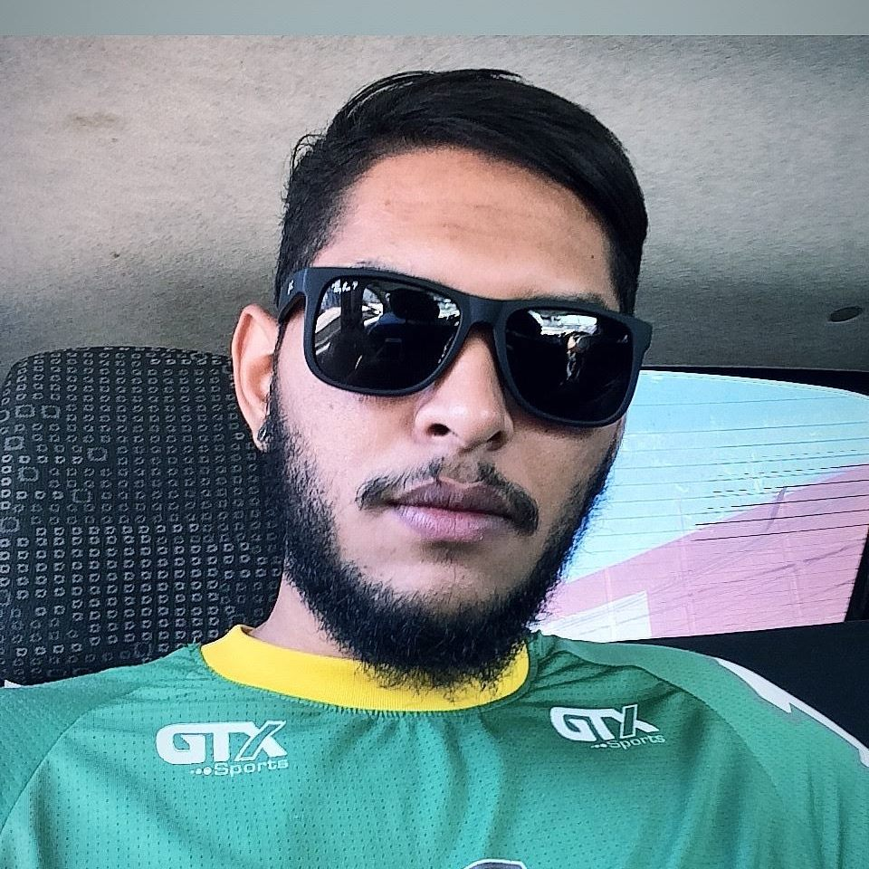

Diego Batista
Computer Science Student at Universidade Federal do Mato Grosso
Front-end Developer Working @ Estuda.com
Hi, I'm Diego Batista, a Computer Science student at the Universidade Federal do Mato Grosso and a front-end developer at the startup Estuda.com, I'm passionate about technology, sports, beer and coffee. I really like Front-End / Back-End and enthusiasm for machine learning. Since I was a child, I like technology and computers, so I decided to pursue an IT career.
 Github
Github Linkedin
Linkedin